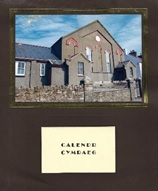
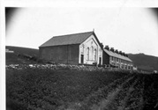
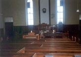
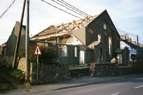
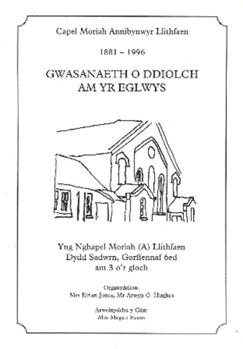
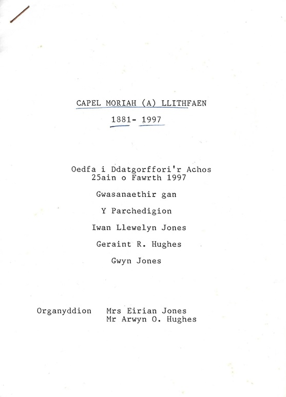
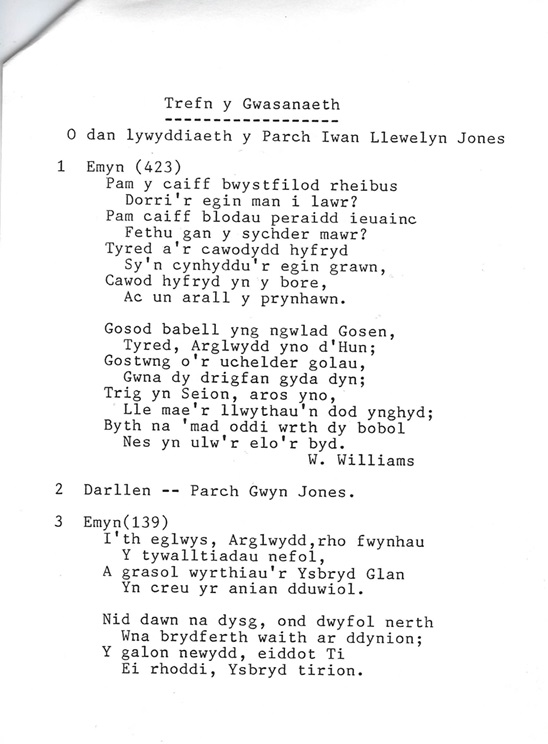
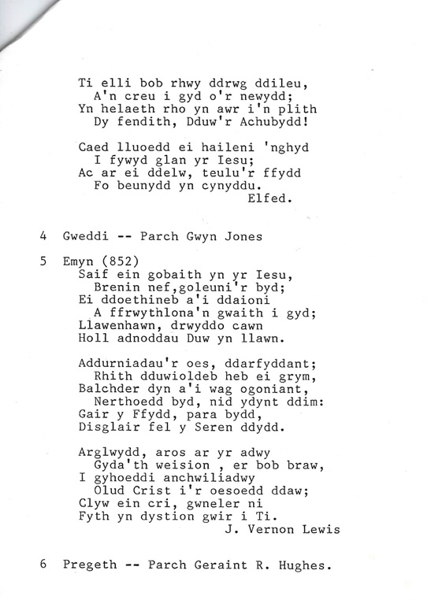
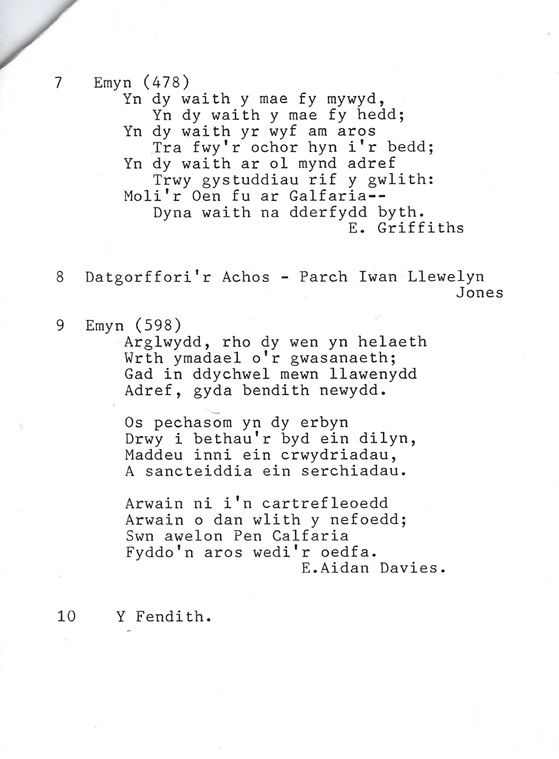
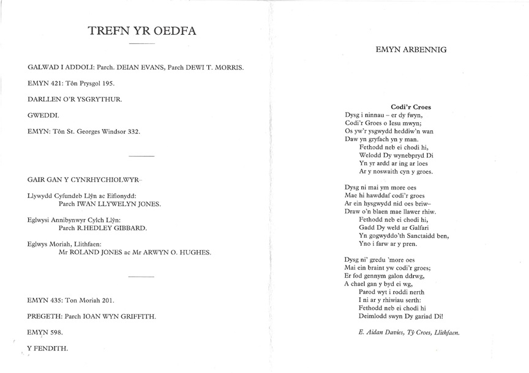

Capel Moreia – Independent Chapel
Calendr Capel MoreiaOn 29 August 1880, a meeting was held in the barn of Llithfaen Uchaf to discuss establishing an Independent movement in Llithfaen. The land was bought for £61.14.0. The chapel was built for £189, seating 300 people. After building the first chapel, a gale ripped the roof off, which was found whole in a nearby field. A preaching meeting was held in November 1881 to establish and officially open the chapel, naming it Moreia. The chapel closed on 25 March 1997.
On 29 August 1880, a meeting was held in the barn of Llithfaen Uchaf to discuss establishing an independent denomination in Llithfaen. 14 people became members that night. Land was bought for £61.14.0. the chapel was built at a cost of £189. It could accommodate 300 people. It was built by Robert Jones, Ceidio and Robert Williams.
Capel Moreia, Annibynwyr.
On 7 and 8 November 1881, a preaching meeting was held to establish the denomination and open the chapel. The chapel would be named Capel Moreia. Robert Williams, Llithfaen Bach and W. Davies, Eifl View were its first deacons.
Later John Williams, Bryncelyn, Robert Jones, Tan y Foel, John Owen, Disgwylfa, John Griffith, Hafod a William Williams, Gwag y Noe became deacons.
In 1893, a musical instrument was purchased, and the nominated accompanists were Grace, Phoebe and Miriam and J.R. Owen, three sisters and a brother.
In 1893, Moreia joined with Salem, Fourcrosses, with the intention of appointing a Minister. James Davies was appointed to the post, and he remained in Llithfaen until 1913. He is buried in Capel Helyg’s cemetery.
Evan Roberts, Cemlyn Roberts’s father and Richard Pritchard oversaw the singing.
On 25 November Moreia’s attendance was very healthy due to the revival. The £1 000 debt was cleared in 1906.
A member of the Church that later served as a preacher was E. Aidan Davies, he wrote hymn number 598 in Y Caniedydd.
Tu mewn i Gapel Moreia.Arglwydd, rho dy wên yn helaeth
Wrth ymadael o’r gwasanaeth
Gad in ddychwel mewn llawenydd
Adref, gyda bendith newydd.
Os pechasom yn dy erbyn
Drwy i bethau’r byd ein dilyn,
Maddau inni ein camweddau
A sangteiddia ein serchiadau.
Arwain ni i’n cartrefleoedd
Arwain ni dan wlith y nefoedd;
Sŵn awelon Pen Calfaria
Fyddo’n aros wedi’r oedfa.
In 1932, the vestry was built, and the land was given by Evan Jones and E. Edwards, Llithfaen Isaf.
In 1943, the Reverend Arthur Thomas was ordained as Moreia’s minister and he was the Minister for Salem, y Ffôr also. He remained in Moreia until 1948.
Here’s a few recollections from Ellen Evans, Alpha:
“They worked hard to get the denomination going in the village. It all started in an old barn, and after building the first chapel , the roof got blown off in a severe gale, and it was found intact in a nearby field. The minister cried openly because of this, but the chapel’s fortuned turned around soon enough.”
Dymchwel Capel Moreia
Rhaglen Oedfa olaf Capel Moreia
     